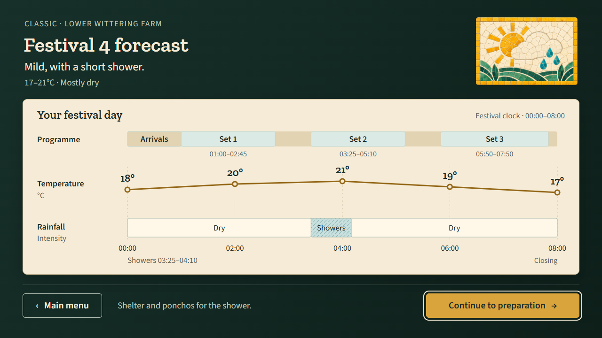
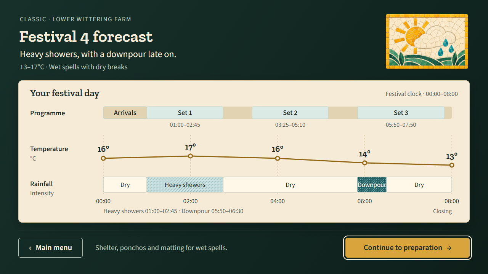

Approved by the user on 15 October 2026. The approved layout is preserved. All displayed festival times are placeholders pending real-clock mapping; runtime labels must use the shared festival-time formatter/model. Weather samples are illustrative future data.
Open visual prototype · Design handoff · 1080p image

